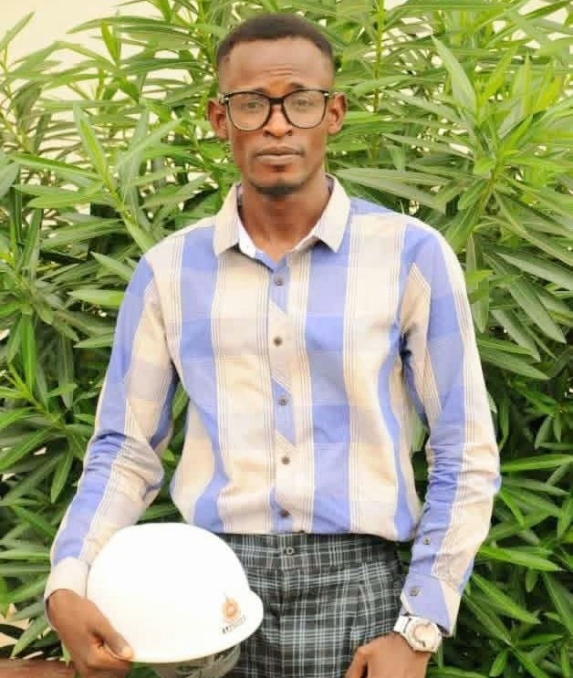

Remote Sensing
Satellite imagery interpretation, land-use monitoring, and vegetation assessment.
HELLO, I'M ISAAC
I am a postgraduate researcher in Agricultural Engineering, specializing in Soil and Water Conservation Engineering. My research focuses on assessing and modelling soil salinity impacts on groundwater around Oba Dam irrigated farms, Ogbomoso.

I am a postgraduate researcher in Agricultural Engineering, specializing in Soil and Water Conservation Engineering. My academic interests centre on soil salinity, groundwater quality, sustainable irrigation, and the conservation of agricultural water resources.
My current research examines the assessment and modelling of soil salinity impacts on groundwater around Oba Dam irrigated farms in Ogbomoso. I use QGIS as a geospatial tool relevant to spatial data management, mapping, and environmental analysis.
My goal is to contribute to evidence-based research that supports sustainable irrigation, responsible land management, and the protection of soil and water resources.
Satellite imagery interpretation, land-use monitoring, and vegetation assessment.
Spatial data analysis, thematic mapping, terrain analysis, and watershed mapping.
Soil erosion control, watershed management, and sustainable water use.
Literature reviews, research writing, data interpretation, and scientific reporting.
Explore how soil salinity impact on groundwater quality around oba dam irrigated farms assessed via the uses of remote sensing and GIS.
Discuss this research →Investigate changes in land use and land cover using satellite imagery to support sustainable agricultural and environmental planning.
Discuss this research →Examine watershed characteristics and potential soil and water conservation measures for sustainable land and water resource management.
Discuss this research →I welcome academic connections and research discussions relating to soil salinity, groundwater quality, GIS, and soil and water conservation engineering.